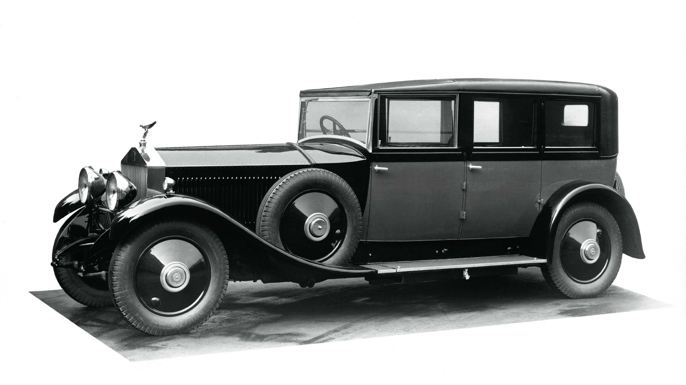
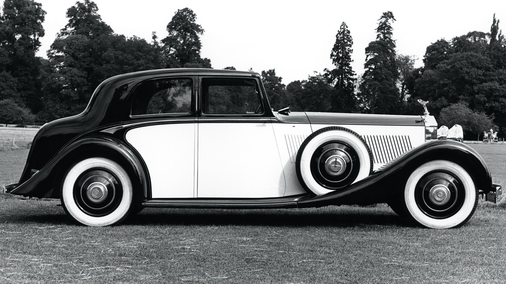
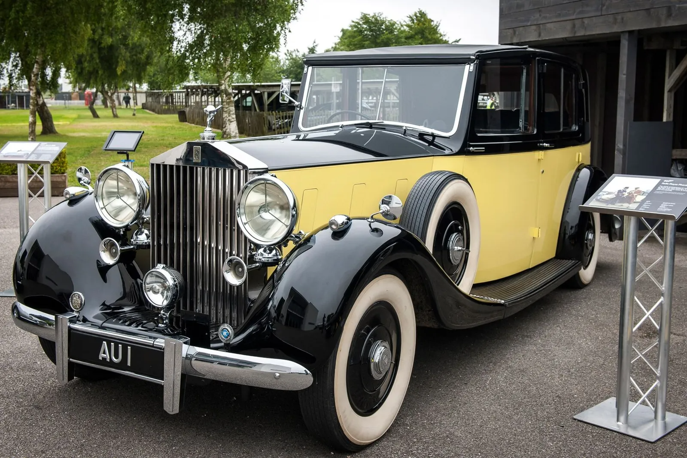
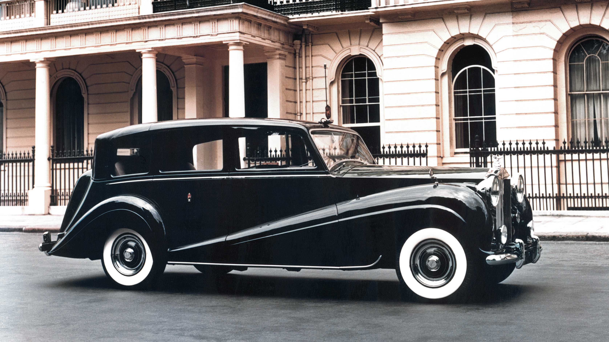

ROLLS-ROYCE PHANTOM: LỊCH SỬ HÌNH THÀNH MỘT BIỂU TƯỢNG (PHẦN 1)
Rolls-Royce định vị thương hiệu là một ngôi nhà nghệ thuật và Phantom chính là một biểu tượng di sản trường tồn với thời gian. Trải qua gần 100 năm và 8 thế hệ, Rolls-Royce Phantom vẫn giữ nguyên cốt cách và tinh thần mà doanh nhân Charles Rolls và kỹ sư Henry Royce hướng đến.
ROLLS-ROYCE PHANTOM: 1 THẾ KỶ, 1 BIỂU TƯỢNG
Thuận theo dòng lịch sử của Rolls-Royce, vào tháng 12 năm 1904, chiếc xe đầu tiên do Rolls-Royce giới thiệu đến với thế giới mang tên 40/50 Silver Ghost (hay còn được gọi là Rolls-Royce 10HP) – được mệnh danh là ‘chiếc xe tốt nhất thế giới’ – cũng là chiếc xe đầu tiên ra đời dưới sự hợp tác giữa hai nhà sáng lập Charles Stewart Rolls và Frederick Henry Royce, chỉ sau 6 tháng quyết định cùng nhau xây dựng một ‘đế chế’ Rolls-Royce đến ngày nay. Đến năm 1925, gần 20 năm sau khi chính thức thành lập thương hiệu Rolls-Royce kể từ năm 1906, chiếc Phantom đầu tiên đã được mang đến với giới mộ điệu – Phantom I – ‘The New Phantom’ đã mở ra một kỷ nguyên mới cho giới yêu xe vào những thế kỷ trước.

Đến giữa những năm 1930, Phantom III được giới thiệu, và một dấu mốc để đáng nhớ khác: đây là chiếc xe đầu tiên và duy nhất trong gia đình Rolls-Royce được sử dụng động cơ V12 cho đến tận năm 1998, sau sự xuất hiện của Silver Seraph. Khung gầm cho chiếc Phantom III cuối cùng được chế tác vào năm 1941, nhưng phải đến năm 1947, nó mới được giao cho chủ nhân với thân xe coachbuild đã hoàn thiện. Ngoài ra, Phantom III cũng là một ‘ngôi sao điện ảnh’ – mẫu xe xuất hiện trong bộ phim James Bond năm 1964, trong phim chính nhân vật phản diện Auric Goldfinger chính là chủ sở hữu. Vào thời điểm đó, Phantom III đã gần 25 năm tuổi và vẫn hoạt động rất tốt.

Đến giữa những năm 1930, Phantom III được giới thiệu, và một dấu mốc để đáng nhớ khác: đây là chiếc xe đầu tiên và duy nhất trong gia đình Rolls-Royce được sử dụng động cơ V12 cho đến tận năm 1998, sau sự xuất hiện của Silver Seraph. Khung gầm cho chiếc Phantom III cuối cùng được chế tác vào năm 1941, nhưng phải đến năm 1947, nó mới được giao cho chủ nhân với thân xe coachbuild đã hoàn thiện. Ngoài ra, Phantom III cũng là một ‘ngôi sao điện ảnh’ – mẫu xe xuất hiện trong bộ phim James Bond năm 1964, trong phim chính nhân vật phản diện Auric Goldfinger chính là chủ sở hữu. Vào thời điểm đó, Phantom III đã gần 25 năm tuổi và vẫn hoạt động rất tốt.

Hoàn toàn khác biệt với 3 thế hệ trước, Rolls-Royce Phantom thế hệ thứ 4 ban đầu được chế tác dành riêng cho hoàng gia và những nguyên thủ tại các quốc gia. Câu chuyện bắt đầu vào năm 1939, khi Rolls-Royce đưa ra một mẫu xe thử nghiệm để tìm ra một truyền nhân cho Phantom III. Quá trình phát triển chiếc xe kéo dài suốt và sau cả Thế Chiến thứ 2. Tên gọi chính thức của chiếc xe này là Comet, tuy nhiên nhiều người gọi chiếc xe này với biệt danh là “Scalded Cat”, ngầm chỉ khả năng vận hành mạnh mẽ. Với danh tiếng của mình, Scalded Cat thường được nhiều cá nhân có tầm ảnh hưởng sử dụng, bao gồm cả Vương tế Philip – Công tước xứ Edinburgh. Rất ấn tượng trước khả năng vận hành của chiếc xe, ông đã đề nghị Rolls-Royce chế tạo cho mình một phiên bản hoàn thiện dành riêng cho mình và vợ – sau này là Nữ Hoàng Elizabeth II, sử dụng hàng ngày.

Vào ngày 15/11/1948, đơn đặt hàng chính thức đến từ Hoàng Gia với yêu cầu chế tạo một chiếc Rolls-Royce cho Vương tế và Nữ hoàng. Ban đầu, hãng xe dự định chỉ sản xuất duy nhất một chiếc Rolls-Royce Phantom IV và Vương tế Philip sẽ là người cầm lái. Với sự thành công về mặt hình ảnh và chất lượng, chiếc xe tiếp tục được sử dụng trong một dự án đặc biệt theo yêu cầu từ chính phủ Tây Ban Nha.